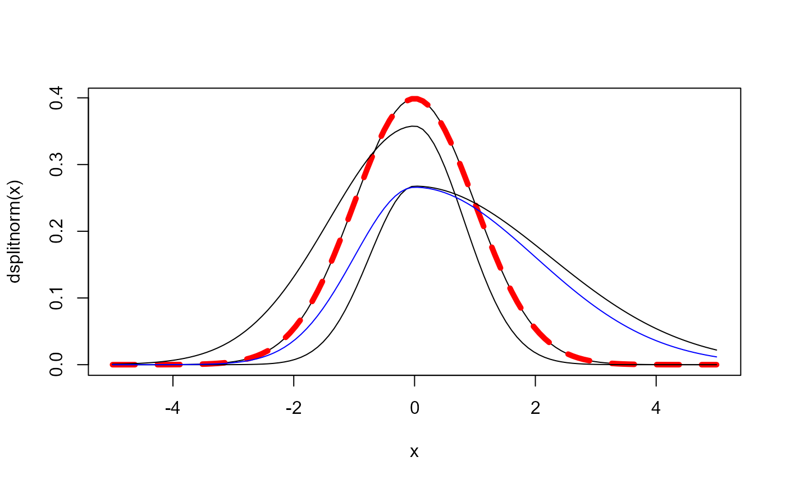
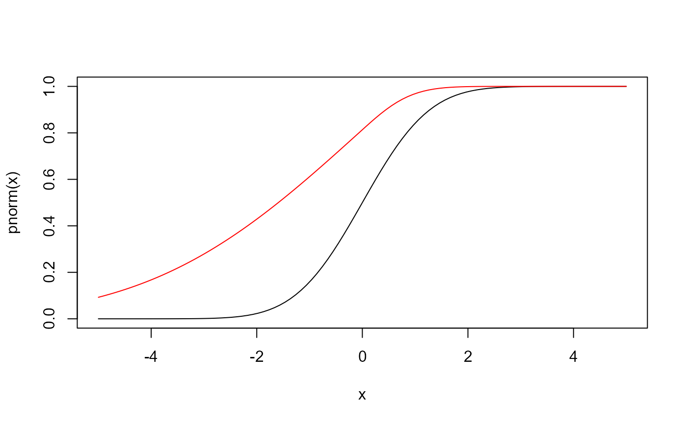
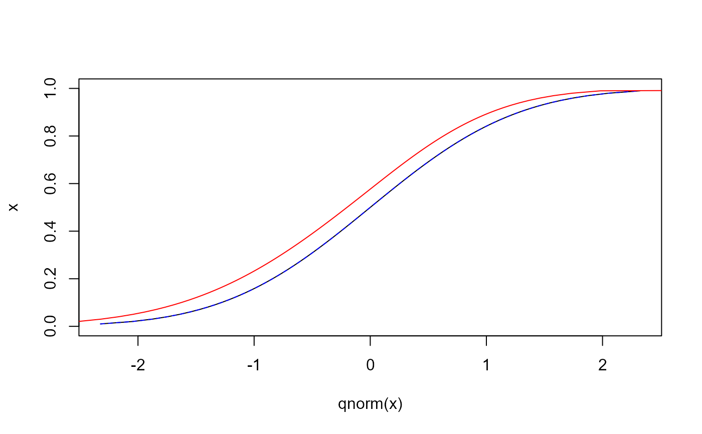
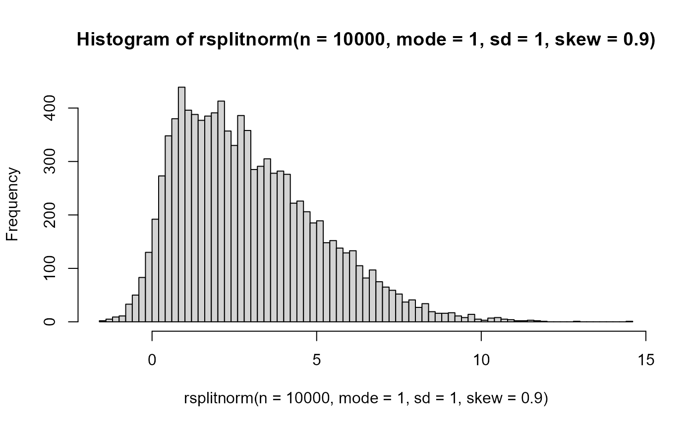

The Split Normal Distribution (or 2 Piece Normal Distribution).
dsplitnorm.RdDensity, distribution function, quantile function and random generation for the split normal distribution with mode equal to mode, uncertainty indicator equal to sd and inverse skewness equal to skew.
Usage
dsplitnorm(x, mode = 0, sd = 1, skew = 0, sd1 = NULL, sd2 = NULL)
psplitnorm(x, mode = 0, sd = 1, skew = 0, sd1 = NULL, sd2 = NULL)
qsplitnorm(p, mode = 0, sd = 1, skew = 0, sd1 = NULL, sd2 = NULL)
rsplitnorm(n, mode = 0, sd = 1, skew = 0, sd1 = NULL, sd2 = NULL)Arguments
- x
Vector of quantiles.
- p
Vector of probabilities
- n
Number of observations required.
- mode
Vector of modes.
- sd
Vector of uncertainty indicators.
- skew
Vector of inverse skewnewss indicators. Must range between -1 and 1
- sd1
Vector of standard deviations for left hand side.
NULLby default.- sd2
Vector of standard deviations for right hand side.
NULLby default.
Details
If mode, sd or skew are not specified they assume the default values of 0, 1 and 1, respectively. This results in identical values as a those obtained from a normal distribution.
The probability density function is:
$$ f(x; \mu, \sigma_1, \sigma_2) = \frac{\sqrt 2}{\sqrt\pi (\sigma_1+\sigma_2)} e^{-\frac{1}{2\sigma_1^2}(x-\mu)^2}$$
for -Inf\(< x < \mu\), and
$$ f(x; \mu, \sigma_1, \sigma_2) = \frac{\sqrt 2}{\sqrt\pi (\sigma_1+\sigma_2)} e^{-\frac{1}{2\sigma_2^2}(x-\mu)^2}$$
for \(\mu < x <\)Inf, where, if not specified (in sd1 and sd2) \(\sigma_1\) and \(\sigma_2\) are derived as
$$\sigma_1=\sigma/\sqrt(1-\gamma)$$
$$\sigma_2=\sigma/\sqrt(1+\gamma)$$
from \(\sigma_1\) is the overall uncertainty indicator sd and \(\gamma\) is the inverse skewness indicator skew.
Value
dsplitnorm gives the density, psplitnorm gives the distribution function, qsplitnorm gives the quantile function, and rsplitnorm generates random deviates.
The length of the result is determined by n for rsplitnorm, and is the maximum of the lengths of the numerical parameters for the other functions.
The numerical parameters other than n are recycled to the length of the result.
References
Source for all functions based on:
Julio, J. M. (2007). The Fan Chart: The Technical Details Of The New Implementation. Bogota, Colombia. Retrieved from http://www.banrep.gov.co/docum/ftp/borra468.pdf
Note
Tested against the fan chart package in MATLAB (http://www.mathworks.de/matlabcentral/fileexchange/27702-fan-chart). Obtained the same results for a set of simple comparisons.
Examples
x<-seq(-5,5,length=110)
plot(x,dsplitnorm(x),type="l")
#compare to normal density
lines(x,dnorm(x), lty=2, col="red", lwd=5)
#add positive skew
lines(x,dsplitnorm(x, mode=0, sd=1, skew=0.8))
#add negative skew
lines(x,dsplitnorm(x, mode=0, sd=1, skew=-0.5))
#add left and right hand sd
lines(x,dsplitnorm(x, mode=0, sd1=1, sd2=2), col="blue")

#psplitnorm
x<-seq(-5,5,length=100)
plot(x,pnorm(x),type="l")
lines(x, psplitnorm(x, skew=-0.9), col="red")

#qsplitnorm
x<-seq(0,1,length=100)
plot(qnorm(x),type="l",x)
lines(qsplitnorm(x), x, lty=2, col="blue")
lines(qsplitnorm(x, skew=-0.3), x, col="red")

#rsplitnorm
hist(rsplitnorm(n=10000, mode=1, sd=1, skew=0.9),100)
